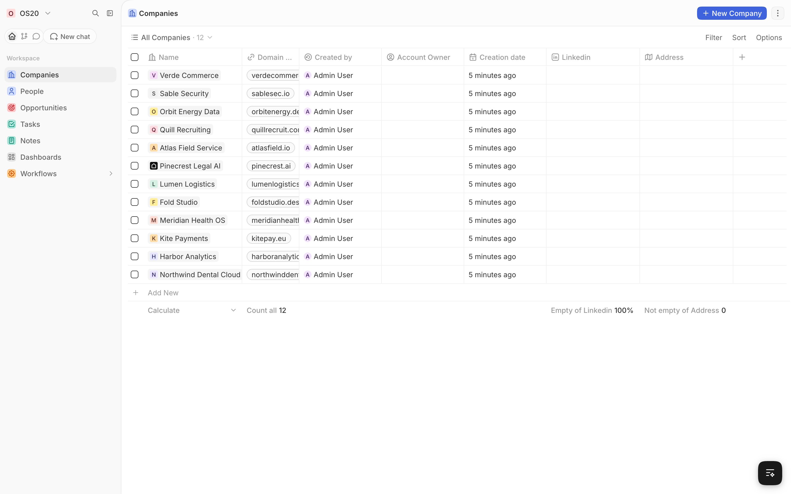

Bring your own AI
Use Claude, ChatGPT, Gemini, OpenRouter or Groq with your own key, or run a local model with Ollama and pay nothing. Tap a logo.
Keys are added in Settings, AI Providers.
Open source CRM that runs on your computer. Ask the AI for leads and they are saved straight to your CRM.
Find the companies that fit you, straight from the live web, with one plain-English prompt.
Use Claude, ChatGPT, Gemini, OpenRouter or Groq with your own key, or run a local model with Ollama and pay nothing. Tap a logo.
Add a Firecrawl, Tavily, Brave or SerpApi key and OS20 reads real company websites, not a database that went stale last year.
Search results are full of directories, "top 10" articles and duplicates. OS20 drops those first, then reads each company's own site.
Select a trigger
Record is created or updated Record is deleted On a schedule Webhook Launch manuallyAutomate the busywork. Workflows react to your records so you do not have to.
Ask AI works with the same records you see. Find leads, look up a company or create records by asking in plain words.
Start a workflow when a record changes, on a schedule, from a webhook or by hand. Then create or update records, send email, call an API or run code.
No API key at all? Run Ollama on the same machine and OS20 picks it up. Your prompts and records stay on your computer.
Every lead, person and deal in one place, on your machine and in your database.
The standard CRM objects, with table and board views, filters, and a REST and GraphQL API. Click one to see its fields.
Build charts from your own records, like deals by stage or companies added each week.
Everything lives in a Postgres database inside Docker on your computer. No account, no login, ports bound to 127.0.0.1.
zero login, runs on localhost, encrypted keys, live lead search, fit scoring, people and companies, workflows, dashboards, REST and GraphQL API, local AI models
Free and open source under AGPL-3.0. One command to install.
View on GitHubDocker Desktop (or Docker Engine on Linux) and Node.js 18 or newer. Then run npx os20-cli and open localhost:3010.
Yes. OS20 is open source under AGPL-3.0. You only pay your own AI or search provider, and local Ollama models cost nothing.
In a Postgres database inside Docker on your computer. OS20 has no cloud account and sends nothing to us.
Claude, ChatGPT, Gemini, OpenRouter, Groq and any local Ollama model. For search: Firecrawl, Tavily, Brave or SerpApi. A search key is optional but gives steadier results.
No. OS20 opens straight into your workspace on localhost.
npx os20-cli